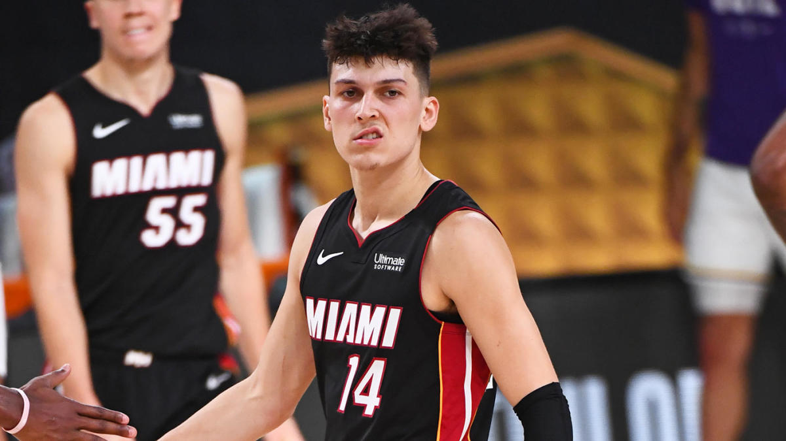

The Miami Heat have something special in Tyler Herro. And they knew long before we did. And once Tyler Herro landed in the NBA bubble, he’s been a different type of player. In his seven games in Orlando, he’s averaging 17.4 points, 5.1 rebounds and 3.9 assists while shooting 53% from the field and 37.8% on threes. That’s a whole lot better than the rest of his rookie season.
 Click here to visit Buas.nl